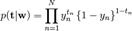
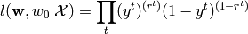

Here is a list of questions:
- Inference mentions that random forests will saturate beyond their training range. E.g. that random forest is bad for extrapolation. Is it and why?
- Inference mentions that there are little correlation between held back training and test sets AUC. He has calculated a 95% confidence interval on Pearson’s product moment correlation coefficient as r=[-0.38, 0.24]
- Inference also trained models on whole training data set, where he used a generalised-linear-model training approach and an approach where the model was obtained by optimising the training set AUC by numerical optimisation of the model parameters. Any idea what he talks about?
- Different notation. See next section
- In scikits.learn there is an option between using the L1 or the L2 norm as penalty function. It isn’t mentioned in the derivations in Bishop, Alpaydin, Hastie, Izenman etc. but what penalty does maximum likelihood correspond to. I think I have read somewhere that maximum likelihood is equivalent to L2-norm penalty (least square error?), but maybe that was assuming a gausian distribution for some of the distributions, and that shouldn’t be necessary with logistic regression, right?
- I am not totally sure but there seems to be a problem when I try to calculate the ROC for a test set of 1e5 rows. 1e3 is not a problem, and I haven’t tried 1e4. I have looked a little more in the code of the ROC-implementation. It looks as if it calculates the FPR and TPR for every unique probability value. And there are no options to manually specify the levels where FPR,TPR should be calculated. Wouldn’t that make sense?
When deriving the logistic regression Bishop uses this notation for the likelihood funtion

while eg. Alpaydin uses

Is the likelihood funtion the probability of the data given the parameters, or is it the probability of the parameters given the data? Or is it equivalent?
Here I’ll first answer the different questions from the above sections.
- Random forest question. Morten didn’t know exactly what Inference talks about when he mentions that Random Forest “saturates” beyond the training data.
- The two other questions regarding Inference’ paper wasn’t discussed at the meeting.
- About the different notation in Bishop and Alpaydin. The notation in Bishop is right. Likelihood-function is the probability of the data given the model. The notation by Alpaydin may be ok, but a bit confusing. I read it as the probability of the parameters (the model) given the data.
- About the penalty-option in scikits.learn. Something about a gaussian prior leads to a 2-norm penalty for parameter values. E.g. we are minimizing an equation with the 2-norm of the parameters as one (led på engelsk?).
- About the ROC beeing calculated for every datapoint, i copied the function from the scikits.learn source, and made it possible to input in which points the ROC curve should be calculated.
We also discussed a couple of things I must finish till next meeting monday 16th.
- Make separate boxplots of the features, for all the rows where IsAlert is 1, and for all the rows where IsAlert is 0.
- Normalize the data before making the PCA. Otherwise features with numerically large standard deviation, will dominate features with smaller standard deviation. A bit strange that most books only focus on the fact that the features should be centered on 0 (substract the feature mean from the feature).
- I must make a correct dataset with extra features of the running mean and standard deviation of the different features. I forgot take the square root of the calculated variance, and I think I made a mistake more.
- I should try to use a window instead of the running total.
- I should try to emulate Inference’ approach, but there is no point in using his coeficients. If I use his coefficients I will probably overfit, since I don’t know which rows was used to estimate Inference’ coefficients.
- I could try to use forward selection and stepwise selection to select the features I am going to use.